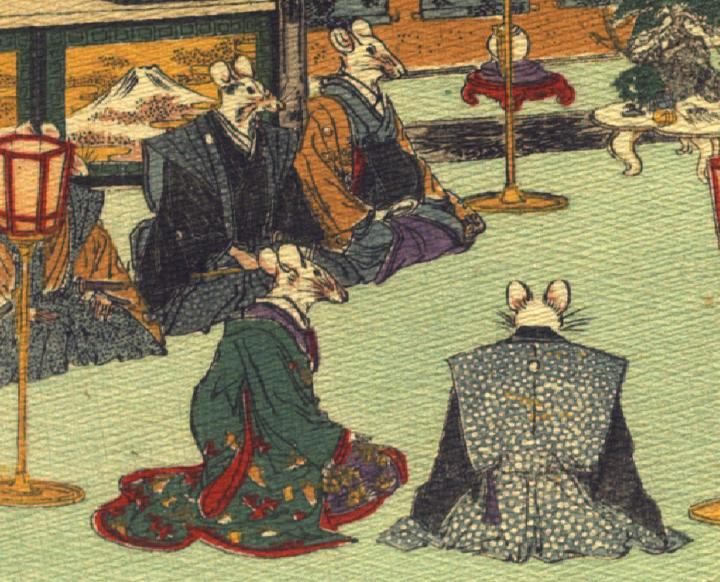

座敷に座る鼠たち。奥に3体の鼠が並んで座り、画面左よりそれぞれ黄色の着物に裃、黒い着物に裃、藍色の着物に黄色の羽織をまとっている。裃の鼠は片手に扇子を持ち、腰に刀を差している。羽織の鼠は女と思われる。手前に、紫色と緑色の内掛を身にまとった鼠と、裃姿の鼠が座っている。打掛の鼠は女と思われる。いずれも手は人間のものである。
著作者：J.Dautremer／出典：親書誌：U426_nichibunken_0111：Le mariage de la souris／日付：2006／資源識別子：U426_nichibunken_0111_0008_0001
Copyright (c)2010- International Research Center for Japanese Studies, Kyoto, Japan. All rights reserved.